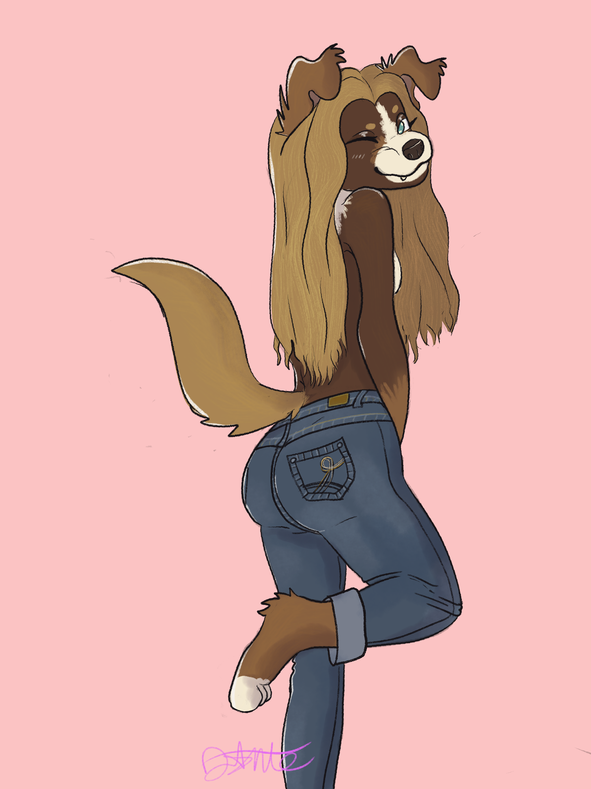

all about abbey!!
- name: abbey
- age: 24
- birthday: november 10th
- gender/pronouns: woman, she/her
- sexuality: sexually fluid, romantically sapphic/lesbian
- time zone: EST
- favorite color: brown and pastel pink
- favorite NFL team: washington commanders
- favorite MLB team: washington nationals
- favorite music genres: pop, classic rock, soul, disco, hip-hop
- favorite music group: the beatles
- favorite music artist: paul mccartney
- favorite season: spring... usually
abbey fun facts!!
- i am a therian! i am an australian shepherd/border collie mix dog, with probably other kintypes that aren't as strong in me somewhere. my
boyfriend helped me design my kintype as a fursona, named anna!

- i have piloted two planes in my life, both cessna 172s, though i sadly do not own my pilot's license yet. maybe someday...
- i am a massive train/locomotive nerd, particularly about the Washington DC Metro and frieght trains (CSX fan). get me started on trains and
i might not stop.
- i was born and raised in west virginia, and lived there for almost 24 years of my life until i moved to maryland in 2025.
- i love my boyfriend :3
- had a shower today
- i've played drums in the past, but primarily play piano these days and do music work in ableton. you can find some of my work
here!